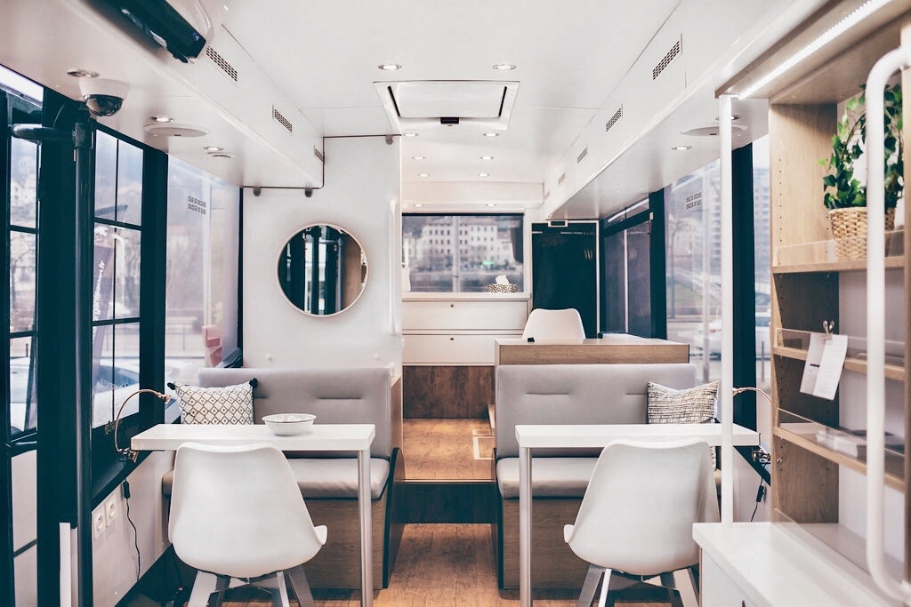
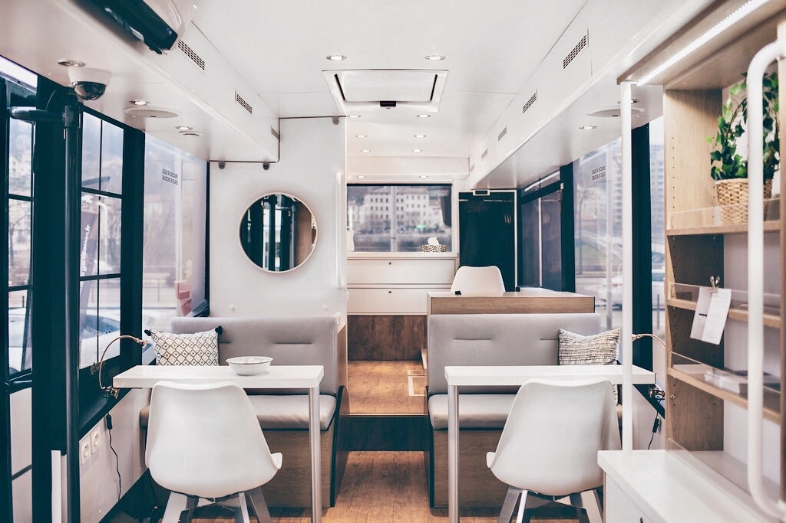

Recruitment platform
Les nouveaux héritiers is a french recruitment platform serving talents and employers. The website offers a full animated and adaptive user interface. All components were wisely made taking care of mobile and laptop platform specific features.


 
